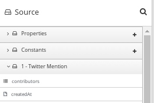

How to specify data shapes in extensions
A data shape holds data type metadata for use by the data mapper.
The data mapper transforms this metadata into internal documents that
it uses to display the source and target data fields in the data mapper
user interface. In an extension definition JSON file for a connector or
for a custom step, each action specification defines an input
data shape (inputDataShape) and an output data shape (outputDataShape).
When you are developing an extension, it is important to specify data shape properties that allow the data mapper to correctly handle and display the source and target fields. The following data shape properties affect data mapper behavior:
-
kind -
type -
specification -
name -
description
kind propertyThe data shape kind property is represented by the DataShapeKinds enum.
The possible values for the kind property are:
-
javaindicates that the data type is represented by a Java class. Follow the"kind": "java"declaration by specifying a fully qualified class name for thetypeproperty. For example:"outputDataShape": { "kind": "java", "type": "org.apache.camel.component.telegram.model.IncomingMessage" }, -
json-schemaindicates that the data type is represented by a JSON schema. Whenkindis set tojson-schema, specify a JSON schema as the value of the data shape’sspecificationproperty. For example:"inputDataShape": { "description": "Person data", "kind": "json-schema", "name": "Person", "specification": "{\"$schema\":\"http://json-schema.org/draft-04/schema#\",\"title\":\"Person\",\"type\":\"object\",\"properties\":{\"firstName\":{...}}}" }The code for the SAP Concur connector contains examples of data shapes that are specified by JSON schemas.
-
json-instanceindicates that the data type is represented by a JSON instance. Whenkindis set tojson-instance, specify a JSON instance as the value of the data shape’sspecificationproperty. For example:"inputDataShape": { "description": "Person data", "kind": "json-instance", "name": "Person", "specification": "{\"firstName\":\"John\",...}" } -
xml-schemaindicates that the data type is represented by an XML schema. Whenkindis set toxml-schema, specify an XML Schema as the value of the data shape’sspecificationproperty. For example:"inputDataShape": { "description": "Person data", "kind": "xml-schema", "name": "Person", "specification": "<?xml version=\"1.0\" encoding=\"UTF-8\" ?><xs:schema xmlns:xs=\"http://www.w3.org/2001/XMLSchema\">...</xs:schema>" } -
xml-instanceindicates that the data type is represented by an XML instance. Whenkindis set toxml-instance, specify an XML instance as the value of the data shape’sspecificationproperty. For example:"inputDataShape": { "description": "Person data", "kind": "xml-instance", "name": "Person", "specification": "<?xml version=\"1.0\" encoding=\"UTF-8\" ?><Person><firstName>Jane</firstName></Person>" } -
anyindicates that the data type is not structured. For example, it might be a byte array or free format text. The data mapper ignores a data shape when itskindproperty is set toany. In other words, the data does not appear in the data mapper and therefore you cannot map any fields to or from this data.However, for a custom connector, when its
kindproperty is set toany, {prodname} prompts you to specify input and/or output data types when you configure a connection that you have created from the custom connector. This happens when you add a connection to an integration. You can specify the kind of the data shape’s schema, an appropriate document for the kind of schema that you specify, and a name for the data type. -
noneindicates that there is no data type. For an input data shape, this indicates that the connection or step does not read data. For an output data shape, this indicates that the connection or step does not modify data. For example, when an input message body is being transferred to an output message body, setting thekindproperty tononeindicates that the data is only passing through. The data mapper ignores data shapes whenkindis set tonone. In other words, the data does not appear in the data mapper and therefore you cannot map any fields to or from this data.
type propertyWhen the value of the kind property is java, the "kind": "java"
declaration is followed by a type declaration that specifies a fully qualified
Java class name. For example:
"outputDataShape": {
"kind": "java",
"type": "org.apache.camel.component.telegram.model.IncomingMessage"
},
When the kind property is set to anything other than java then any
setting for the type property is ignored.
specification propertyThe setting of the kind property determines the setting of the
specification property, as shown in the following table.
kind property setting |
specification property setting |
|---|---|
|
Java inspection result. For each extension that you write in Java, use As a reminder, for step extensions written in Java, |
|
An actual JSON schema document. The setting cannot be a reference to a document and the JSON schema cannot point to other JSON schema documents by means of references. |
|
An actual JSON document that contains example data. The data mapper derives the data types from the example data. The setting cannot be a reference to a document. |
|
An actual XML schema document. The setting cannot be a reference to a document and the XML schema cannot point to other XML schema documents by means of references. |
|
An actual XML instance document. The setting cannot be a reference to a document. |
|
The |
|
The |
name propertyThe data shape name property specifies a human readable name for the
data type. The data mapper displays this name in its user interface
as the label for the data fields. In the following image,
Twitter Mention is an example of where you would see the value of
the name property.

This name also appears in data type indicators in the {prodname} flow visualization.
description propertyThe data shape description property specifies text that appears as a
tooltip when the cursor hovers over the data type name in the data mapper
user interface.